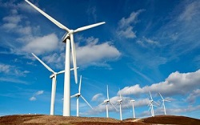

Watts this about

Electricity is fundamental to the world of today. It influences the economy, Health care, evolution of mankind and daily living. The current crisis at hand is one that urges consumers to reduce power consumption to avoid a national blackout. The purpose of this task is to find and raise awareness on ways to eliminate the current energy crisis in our country. This means that extensive research needs to be done on the crisis and the critical analysis of the data received from various sources also needs to be analyzed. The desired outcome would be one that allows all people living in the country to make their own sacrifices to conserving energy. Hopefully this task will allow individuals to find great ideas as to how the country will go about conserving energy. These ideas can ultimately help solve the crisis in our country and could also raise awareness towards neighboring countries and the countries on far reaches of the globe. This task could also provide people with tips on how to conserve energy during their day-to-day activities
Article
Disclaimer: The following articles are used as reference only, quoted directly from the authorThe overloading of electrical wires strung along the trees leading to the only power box in the area is an ubiquitous sight in the townships. Hundreds of wires come off of the power box because the residents of the area were not given access to the electricity they need so they decided they would take it. This is of course illegal and not to mention very dangerous but every house in the area has a wire coming out of it and every wire is known by their owner in order to fix problems as soon as they arise. Most of the sub-stations are very unsecured to begin with so having so many additional wires coming off of it is very dangerous for the people nearby and the kids playing in the area. The government does not like that the people using the sub-stations are not actual residents so they refuse to give them electricity but if they were to install more sub-stations then the problem would be solved.
How can you help?
What can you do to better our city ? Well, it starts with becoming more energy efficient. Invest in energy efficient home appliances and devices throughout your home. You can purchase such items on www.sustainable.co.za and www.energystar.gov or you can get tips at "HOMEMAKERS.com" under the Home Improvements section.